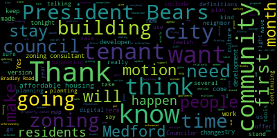
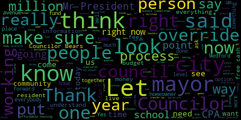
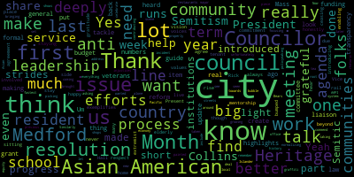
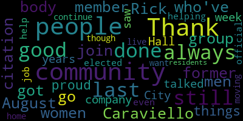

AI-generated transcript of City Council 05-28-24
English | español | português | 中国人 | kreyol ayisyen | tiếng việt | ខ្មែរ | русский | عربي | 한국인
Back to all transcripts
[Bears]: Medford City Council, 11th regular meeting, May 28, 2024. Mr. Clerk, please call the roll.
[Hurtubise]: Councilor Callahan. Councilor Callahan?
[Callahan]: Present.
[Hurtubise]: Thank you. Vice President Collins.
[Collins]: Present.
[Hurtubise]: Councilor Lazzaro.
[Lazzaro]: Present.
[Hurtubise]: Councilor Lemingng.
[Leming]: Present.
[Hurtubise]: Councilor Scarpelli.
[Scarpelli]: Present.
[Hurtubise]: Councilor Tseng.
[Tseng]: Present.
[Hurtubise]: Councilor Bears.
[Bears]: Present. Seven present, none absent. Meeting is called to order. Please rise for the Pledge of Allegiance.
[Hurtubise]: I pledge allegiance to the flag of the United States of America.
[Bears]: Thank you. Before we start, we're going to give a citation based on a vote we took at a prior meeting. I'm going to read out the citation. The Medford City Council takes pleasure in awarding this council commendation to former Council President Richard F. Caraviello on the honor of being named the 2024 Medford Chamber of Commerce Citizen of the Year. Your long-time commitment to the City of Medford, the Medford City Council, our residents, and the local business community makes you an outstanding Citizen of the Year and a valued member of our community. Respectfully offered by Zach Bears, Council President, and George Scarpelli, City Councilor.
[Scarpelli]: So I apologize. Thank you, Council President. This is a long time coming. I think that it's funny. I don't know if people know Councilor Caraviello and what kind of a person he is. Councilor Caraviello ran for mayor, unfortunately. In my view, he was a couple votes behind. But you would think that someone who's spent so much time in this chamber working for the Citizens of Medford, you'd think he'd be tired. But last week, I think he spent over 60 hours helping an 88-year-old young lady that was being displaced from her apartment who was battling cancer, and he drove her all over the city to make sure that she was safe and her rights were protected. So this is the type of person Rick Caraviello is. I've had the honor of working with Councilor Caraviello as an elected official and as our past patriarch and someone that I mentored myself against, um. To receive this award from the city. I think it's perfectly fitting. And I miss you back here, but I know you're still working hard for the citizens of Medford. We should all take a great look and understand how Rick Caraviello lives his life, because if we had more Rick Caraviellos in this world, I think Medford would be just a supreme place to live. So congratulations, my friend, well earned.
[Bears]: Councilor Tseng?
[Tseng]: Thank you. Last week I was in City Hall for meetings and I bumped into Rick on his runs to help an elderly tenant stay in her home and help her find a place to live. And I think that really exemplifies, even though you're not on this side of the rail, your service to the city is never ceasing. And so I'm deeply, deeply grateful for your for your service to Medford, for your commitment to our city and all of our residents, and for your mentorship during my first term on the city council when we were both sitting over there. We don't always agree on issues, but I honestly think that folks need to hear us talk about things because I think there's so much agreement that we have, so many values that we share, a vision for Medford that I think folks need to know that we share. And I'm so happy that you're staying involved in our city. And again, a lot of respect, a lot of gratitude to the work that you've done for us.
[Bears]: Thank you Councilor Tseng. Councilor Collins?
[Collins]: Thank you, President Bears. I want to congratulate you again. Rick, in my culture, we have a name for a person like you. It's a mensch. And, you know, this past week was, you know, we all talked about your service and making sure that this elderly tenant had a safe landing spot. But I know that for you, this is just, you know, that was just a regular Tuesday. And it's that kind of service that makes this honor so well earned. So thank you for doing what you do all the time.
[Bears]: Thank you. Would you like to say anything? You can come up. You can come up. You might have to press the button. A light should come on. No?
[Caraviello]: There we go.
[Bears]: There you go.
[Caraviello]: Rick Caraviello, former member of this August body.
[Bears]: Welcome back.
[Caraviello]: Thank you. Thank you for the citation. I got to join a group of men and women who've done good things for the community since 1970. And I'm proud to be in their company. And we talked about, I saw people in City Hall last week. This is what I've always done for the last 30 years, is helping people. And as an elected official, that's our job is to help people. And even though I'm not here still, I'll still continue to, I live here, this is my home, I'm not moving. I want a good community and I'll always be here for the residents of the community. So thank you.
[Bears]: Thank you, Rick. Take a picture. 24-365 resolution to recognize and celebrate Jewish American Heritage Month.
Be it resolved that the City Council recognize and celebrate Jewish American Heritage Month. Vice President Collins.
[Collins]: Thank you, President Bears, for co-sponsoring this resolution with me. Jewish American History Month. Heritage Month, excuse me, is a relatively new commemoration. It was first proclaimed in 2006. It was a collaboration between the American federal government and Jewish museums throughout the nation. And I think that this is a wonderful opportunity to thank Jewish culture bearers in Medford, not just for their contributions, but for continuing to tell the stories of this community. And it's a good reminder to thank all culture bearers of all communities within Medford for continuing to tell their stories and share their culture and their history with the entire community.
[Bears]: Councilor Tseng?
[Tseng]: Thank you, Vice President Collins, for introducing this resolution. We all know that the last few years, it's beyond this last year. Ever since 2016, anti-Semitism has been on the rise in our country due to extremist voices enabling and normalizing rhetoric. Now, I really want to thank Councilor Collins and your efforts to root out anti-Semitism in our community. I remember one of the first resolutions you introduced as a city councilor was to get the mayor's office to properly address an anti-Semitic incident and to set up institutions to deal with that. We've made some progress. We haven't made all the progress we've wanted, but I think it shows, you know, your leadership on this issue that you've brought this to light. Similarly, you were the first Councilor on the scene when a anti-Semitic piece of graffiti was painted on one of our, you know, on the streets of Medford, very unfortunately. And I want to commend you for your leadership, again, for bringing that to light and for focusing on the injustices in our community.
[Bears]: Thank you, Councilor Tseng. On the motion of Vice President Collins seconded by Councilor Tseng, any further discussion by members of the Council? Seeing none, is there any discussion by members of the public? Name and address for the record, please.
[Castagnetti]: Thank you, Councilor. Andrew Castagnetti, East Medford, Massachusetts. I want to thank the Council for putting this on the agenda. It seems to me I've never seen this much anti-Semitism in my lifetime. It probably goes back to the 30s and maybe 2030, besides. This has been going on for more than 2,000 years. You probably would not expect me to make this kind of a quote, but I like to quote Genesis chapter 12, verse three. I will bless thee that will bless thee, and curse him, her, or it that curses thee. My translation is if you go against the Jews, you will perish. So, I really appreciate you put this on the table, because we're in dire straits in this world. Thank you for listening.
[Bears]: Thank you, Mr. Castagnetti. Any further discussion? Seeing none, on the motion. All those in favor? Opposed? Motion passes. 24-368, offered by Councilor Tseng.
Be it resolved that the City Council recognize and celebrate Asian American and Pacific Islander Heritage Month. Councilor Tseng.
[Tseng]: Thank you, President Bears. This month is Asian American and Pacific Islander Heritage Month, AAPI Heritage Month for short. This is one of the fastest growing communities in our country, let alone in our city. I think we see it all around us, new restaurants and bubble tea shops and everything coming in. Asian Americans are really picking up a big part of our local economy. They're contributing in our school system as we've seen in previous meetings. And this is a month to celebrate that history, that heritage here in Medford and in our country. We've taken a lot of strides towards equity in our city in the last few years. I know I have a resolution later on in the agenda about for asking for updates on efforts the city is taking to better include Asian Americans in the policymaking process. But this resolution is just celebratory. Yeah.
[Bears]: Thank you, Councilor Tseng. Any further discussion? On the motion of Councilor Tseng, seconded by Councilor Callahan. All those in favor? All opposed? Motion passes. Is there a motion to suspend the rules to take paper 24-372? on the motion of Councilor Tseng to suspend the roll to take paper 24-372, seconded by? Seconded by Councilor Lemingng. All those in favor? It's under suspension. All those in favor? Opposed? Motion passes. 24-372 offered under suspension by Councilor Scarpelli. Be it resolved that the City Council acknowledge our U.S. military personnel who died while serving our country in recognition of Memorial Day and thank them for their ultimate sacrifice in protecting our country's freedoms. Councilor Scarpelli.
[Scarpelli]: Thank you, Councilor Bears. I think that I have to put this forward for one simple reason, that the acknowledgment. I know that yesterday was a very special day, and I know that some of my fellow Councilors were there and showing their support to our veterans. Unfortunately, my wife ran another half a marathon. I was there supporting her, but I wanted to make sure that this body recognized all of the sacrifices made for our military men and women, and really showed that respect yesterday, and understand where we are today is because of our veterans. So thank you.
[Bears]: Thank you, Councilor Scarpelli. Any further discussion? Councilor Tseng?
[Tseng]: I want to thank Councilor Scarpelli for putting this on the agenda. We owe our peaceful existence here to the sacrifices that have come decades before us and even today, to our military. I'm deeply grateful for this resolution because I think it highlights our city council's dedication to the men and women who served our country. And I think it highlights the work that we've been doing as a city council to tackle issues for veterans, to better serve them, and to tackle real social issues that veterans face, you know, in terms of employment and housing in our city. You know, these are issues that this council takes very seriously. I know Councilor Lemingng has been leading a lot of that work, so I want to thank him as well.
[Bears]: Thank you, Councilor Tseng. Any further discussion? Seeing none, I want to thank Councilor Lemingng for speaking on behalf of the council at yesterday's Memorial Day Remembrances and thank everyone who participated. On the motion of Councilor Scarpelli, seconded by? Seconded by Councilor Collins. All those in favor? Opposed? Motion passes. The records, records of the meeting of May 14th, 2024 passed to Councilor Lazzaro. Councilor Lazzaro, how did you find the records?
[Lazzaro]: I found them in order and I motion to approve.
[Bears]: On the motion of Councilor Lazzaro to approve the records of May 14th, seconded by Councilor Tseng. All those in favor? Opposed? Motion passes. Reports of committees. Is there a motion to join, describe, and then approve? On the motion of Councilor Callaghan, to join the reports and committees, followed by a brief synopsis, and then approve. seconded by Councilor Tseng. All those in favor. Opposed? Motion passes. 24-045 offered by Council President Bears committee the whole budget May 14, 2024. This was our fifth preliminary budget meeting, we discussed several departments, same with our Committee of the Whole, May 15, 2024. and our Committee of the Whole, May 21st, 2024. 24-073 offered by Councilor Lemingng, Resident Services and Public Engagement Committee, Listening Session Subcommittee, May 15th, 2024.
Councilor Lemingng?
[Leming]: Thank you. So the resident services and public engagement subcommittee consisted of myself, Councilor Callahan and Councilor Tseng. Met, we basically just discussed procedures for these listening sessions and divided the different groups that each subcommittee member would schedule. listening sessions with over the next year or so. And then we, that was pretty much it. It was a pretty informal meeting.
[Bears]: Thank you, Councilor Lemingng. 24-025 offered by myself, administration and finance committee, May 21st, 2024.
This is a meeting to discuss the commercial vacancy tax and commercial vacancy issue. Paper remains in committee. 24-351, 24-354, resident services and public engagement committee, May 22nd, 2024.
Councilor Lemingng?
[Leming]: Thank you. We drafted and approved the second newsletter of the Medford City Council, which is now available on the City Council web page. If anybody is interested in checking out the final version, we also met to discuss the proposed ordinance change to allow the veteran services director to offer an incentive to landlords that are willing to rent out to qualified veterans and address the veterans homelessness issue. There was a motion to send that to legal for review. And that was, those were the items that were discussed. Thank you.
[Bears]: Thank you, Councilor Lemingng. And 24-033, Planning and Permits 2024, Vice President Collins.
[Collins]: We met again with the city council zoning consultant, and we reported out several items which are all on the city council agenda tonight. The table of use and parking regulations, updating some definitions, updating just the digital version of the existing zoning map, and municipal exemptions, no substantive changes, just some tweaks to streamline the city's zoning procedures while we work with the zoning consultant on more thematic changes. Thank you.
[Bears]: Thank you, Vice President Collins. On the motion to approve by Councilor Tseng, seconded by Councilor Callahan. All those in favor? We'll go that way. All those in favor? Opposed? Motion passes. 24-370 offered by councilor Tseng. City Council is under the refer to committee for further discussion resolution to create a residence guide to City Council position processes being resolved with the Resident Services and Public Engagement Committee, create and publish a short guide in English and commonly spoken non-English languages to the City Council for residents to understand the City Council, its procedures and its processes. Councilor Tseng on the motion to refer to resident services and public engagement, seconded by? Seconded by Vice President Collins. Do you want to give a short?
[Tseng]: Yeah, I'll give a very short presentation or description. So at our first meeting this term, I noted that one big thing that we would be working on big picture wise on this council would be transparency and reform. And, you know, meeting a few weeks ago, some residents suggested that we create a resident's guide to City Council to demystify some of the processes and to make it really clear what happens when a paper is introduced onto the agenda. What do these committees mean? How often do they meet? A real simple user's guide. And so in the spirit of transparency, reform, and inclusion. I think that this would move our city council forward and make our work much more accessible.
[Bears]: Thank you, Councilor Tseng. On the motion.
[Collins]: Second.
[Bears]: Councilor Tseng, seconded by Vice President Collins to refer to Resident Services and Public Engagement Committee. All those in favor?
[Collins]: Aye.
[Bears]: Opposed? Motion passes.
[Collins]: President Bears?
[Bears]: Vice President Collins... and I would ask, please, if you're having private conversations, please take them out in the hallway. Vice President Collins.
[Collins]: Motion to suspend the rules and take 24-366 out of order.
[Bears]: Thank you. On the motion to suspend the rules, take paper 24-366 out of order by Vice President Collins, seconded by Councilor Tseng. All those in favor? Opposed? Motion passes. 24-366, request for appropriation, Community Preservation Committee. May 23rd, 2024, to the Honorable President and members of the Medford City Council, Medford City Hall, Medford, Massachusetts 02155, regarding Community Preservation Committee appropriation request. On behalf of the Community Preservation Committee, I respectfully request and recommend that your Honorable body approve the following recommendation of the Community Preservation Committee. requesting the appropriation of $5,000 from the CPA General Reserve to Trees Medford and the Department of Public Works Forestry Division to conduct an inventory of trees in city parks. The project will be tracked in the Community Preservation Fund. The CPC recommendation letter is attached and incorporated. CPC Chairperson, CPA Manager, Teresa DuPont and a member of Trees Medford will be in attendance to answer questions. Thank you for your consideration. Respectfully submitted, Breanna Lungo-Koehn, Mayor.
[DuPont]: Good evening. Thank you so very much, Mr. President, City Councilors, Mr. Clerk, Mr. Messenger, for having us here tonight. I'm joined remotely by Amanda Bowen. Unfortunately, Roberta Cameron had a triple booking, so she's unavailable. But Amanda Bowen is joining me via Zoom, and she is with Trees Medford. For those who don't know me again, Tracy DuPont, I'm the community preservation manager here for the city. Before you tonight is an appropriation request in the amount of $5,000. As President Bears mentioned, this would be to conduct an inventory of existing trees that are in our public parks. I don't want to steal any of Amanda's thunder, but this is part of an ongoing effort from Trees Medford, which is our local advocacy group here in the city, to create a holistic citywide inventory of all of our trees so that way we can make efforts to increase or capitalize on various different areas in the city. I'm not sure if Amanda would like to chime in here. I'll stop talking for a moment to give her a moment.
[Bears]: Amanda, if you could raise your hand on Zoom. And once again, I please ask if you're having a private conversation, please take it out in the hallway. Please, if you're gonna keep talking, thank you. There's people talking in the back.
[DuPont]: And if Amanda's unable to join or provide comment, I can field any questions that you may have.
[Bears]: I'm not seeing Amanda.
[DuPont]: Okay. But again, this is to conduct an inventory of trees that are existing in public parks. Part of the comprehensive plan goals are to increase our tree canopy here in the city. We are an urban environment. We need more trees. So that is the goal of this grant is to conduct that.
[Bears]: And I'm happy to read the funding recommendation letter if you'd like. Funding recommendation decision, May 14, 2024. Applicant name, City of Medford Forestry Division. Co-applicant name, Trees Medford. Public tree park inventory on May 14th, 2024. The City of Medford Community Preservation Committee, CPC, voted six to zero to zero to recommend to the City Council that Trees Medford and Medford's Forestry Division be awarded $5,000 to conduct a citywide inventory of all public trees in city-owned parks. In reaching the decision, the CPC found that the project meets the CPA objective of preserving and restoring city-owned recreation spaces. Any further questions by a member of the Council? Councilor Scarpelli.
[Scarpelli]: parks, open spaces, historical sites, and affordable housing?
[DuPont]: Correct.
[Scarpelli]: Right. So I think that this falls, just it falls in with the process and it's something that's so needed. I know that it's been working, the process has been working, I think, in the cemetery and other places around the city to make sure that we take care of our tree canopy. So thank you.
[Bears]: Thank you. Is there a motion on the floor? On the motion approved by Councilor Collins, seconded by Councilor Callaghan. Mr. Clerk, please call the roll.
[Hurtubise]: Councilor Callaghan? Yes. Vice-President Collins?
[Collins]: Yes.
[Hurtubise]: Councilor Lazzaro?
[Lazzaro]: Yes.
[Hurtubise]: Councilor Lemingng?
[Leming]: Yes.
[Hurtubise]: Councilor Scarpelli?
[Scarpelli]: Yes.
[Hurtubise]: Councilor Tseng?
[Tseng]: Yes.
[Hurtubise]: President Bears?
[Bears]: Yes. 7 in the affirmative, none negative, the motion passes. Thank you, Theresa.
[DuPont]: Thank you, and on behalf of Trees Medford, thank you very much.
[Bears]: Thank you. 24-364, petition for a common victualler license, the Great American Beer Hall LLC. On file, business certificate, petition received, letter of compliance received, state tax ID received, workers' compensation pending, treasurer, collector, building department and fire department pending final approval, police and traffic impact pending final approval. and Health Department pending final approval. We do have the petitioners before us, just a little context. We are, I think the intent is to move forward here on a conditional common victualler license pending all of the approvals listed as well as the issuance of a certificate of occupancy. And with that, I'm happy to turn it over to Councilor Scarpelli or the petitioners.
[Scarpelli]: Yeah, thank you so much. A quick update. I think everybody's waiting. So how's everything look?
[Arthur]: Looks great.
[Bears]: Name and address for the record.
[Arthur]: Oh, sorry. Brian's Arthur, 142 Mystic, Great American Beer Hall.
[Chase]: John Chase, 61 Pullen Road.
[Arthur]: Great American Beer Hall, but anyways. Over the weekend, they laid asphalt for the site, and we're going to start the beer garden and the outside landscaping and framing. The bar is going up next week. It's really exciting. And we're set for a mid-July opening. So yeah, we're moving along over there.
[Scarpelli]: That's great news. really exciting. So I think that, uh, Mr. President, I see that I know that we're waiting. Everything right now is pending. But as you said, this is provisional right now. So we move forward. I would move forward what we have in place right now.
[Bears]: Great. Any further questions? by members of the council for the applicant before we move ahead. Seeing none, I'll just say we also know we've received the application for a special permit that has to go through the advertising process, so likely there will be on the meeting of June 25th, we will have you back to talk about that. On the motion of Councilor Scarpelli to approve the common victualler's license conditional on the pending approvals listed here, as well as the occupancy permit, and do you also want to do a review?
[Arthur]: Yeah, we always do a 30 60 day review ...
[Bears]: A 30 60 day review upon opening, so we'll hear from everyone. And if there's issues, we'll have you back to talk about it. Um, so the motion is to approve conditional on the pending approvals as well as the occupancy permit and 30 and 60 day review upon opening.
[Arthur]: Thanks.
[Bears]: Great. On that motion by Councilors Scarpelli, seconded by Vice President Collins. Mr. Clerk, please call the roll.
[Hurtubise]: Councilor Callahan?
[Callahan]: Yes.
[Hurtubise]: Vice President Collins.
[Collins]: Yes.
[Hurtubise]: Councilor Lazzaro.
[Lazzaro]: Yes.
[Hurtubise]: Councilor Lemingng.
[Leming]: Yes.
[Hurtubise]: Councilor Scarpelli.
[Scarpelli]: Yes.
[Hurtubise]: Councilor Tseng?
[Tseng]: Yes.
[Hurtubise]: President Bears?
[Bears]: Yes. 7 in the affirmative, none negative. The motion passes. Thanks, you guys.
[Arthur]: Thank you.
[Bears]: We'll see you in a couple weeks.
[Arthur]: Thanks.
[Bears]: Good luck. 24-359 offered by Vice President Collins. Resolution to hear an update from the Brooks Park Tenant Associations. Be it resolved that the Medford City Council hear an update from representatives of the Brooks Park Tenant Association on the status of their tenancies and efforts to negotiate with their property owner. Vice President Collins.
[Collins]: Thank you, President Bears. This council has for a long time been a forum for residents when they are in a time of need. I think it's fitting that former Councilor Caraviello is here tonight because in my first term, you know, he was the liaison that bridge that made that connection with a whole group of tenants that were in a time of need and I think early 2022 with the Bradley Road tenants and made sure that Councilors were informed of what was happening in their building and could offer whatever support we could as they sought their next safe haven in Medford. And I'm glad that this council can be a forum to hear from residents in any occasion of need. Over the past several months, tenants at the Brooks Park apartments have been keeping councilors informed of their situation, which includes, you know, the property changing hands, and unfortunately, a wave of displacement and evictions. I understand that they've been seeking to converse and discuss and negotiate with their property owners that they can remain in this community, and I am grateful to them for appearing tonight so that we can hear an update directly from the source about the status of their tenancies. Thank you for being here.
[Clinton]: Thank you guys for having us. Thank you.
[Bears]: Name and address for the record, please. You're good.
[Clinton]: Rachel Clinton, 8 Brooks Park, apartment 23. Thank you, council members, for having us and acknowledging that this is such a serious issue, too. Before I get started, I just want everyone from the Brooks Park Tenant Association that's here to stand up, please. And the two wonderful people standing beside me are also a part of the Tenant Association. I, so yeah, here's my testimony. I've lived at Brooks Park for three years now. We have a beautiful and diverse community. It is multilingual and we take care of one another. I want to continue to live here. I was told my rent was going to be increased by $200 with a two weeks notice in January. I was fortunately able to negotiate it down, but now my lease ends in August. I do not have the money to move and will not find a place that is affordable near here. I have built a community here. I should add my current rent is nearly half of my income, which as you can imagine, leaves little for food and all of the bills I must pay on top of it all. Being able to live much closer to work has made my commute time shorter and with the services I provide for Medford has made my connection and ability to do my job far better. I support rent stabilization and believe we should continue to keep our community together instead of pushing people out who have made this place home.
[Bears]: Thank you. Name and address for the record, please.
[Forster]: Is this?
[Bears]: Yeah, it's on.
[Forster]: I'm Julia Forster. Thank you for meeting, letting us talk tonight. Oh, at 8 Brooks Park, apartment 20. I have lived at Brooks Park for 23 years. It is a diverse and bilingual community. It is my home. Community is important to me. It is stable and I feel safe. It was sold to Jacob Grossman and now managed by Charles Gate. They want to evict all residents so they can come in, renovate, and increase the rent. We said no. We will not move and became Brooks Park Tenant Association and joined with City Life Vita Urbana. My lease ended on April 30th, 2024. I have not received an eviction notice, but they did not cash two checks for rent in April, 2024. Now I've learned I pay through my checking account. Their intention was to evict me for nonpayment. They were not successful. I want Jacob Grossman, the owner, to sit down with Steve Meacham of City Life Vida Urbana, Joel Childers, spokesperson for the Tenant Association and all of its members. Talk and negotiate. I also want him to listen and fix immediately the concerns of tenants regarding noisy residents, leaking bathroom ceilings, and I hate to say, mice. Thank you very much.
[Bears]: Thank you.
[Fondacaro]: My name is Alexis Fondacaro at Brooks Park Building 6, apartment 31. I've also been dealing with a lot of the same thing that my The people who spoke previously were stating where they're trying to evict all of us and do these renovations and raise the rent. They're still trying to evict me despite the fact that I've gotten caught up on my rent there. They still haven't. processed the raft payment that was given to them several months ago. And now I have to go back to court again in September to argue with them on whether I paid the rent or not, despite the fact I have my receipts. I like living at the Brooks Parks apartments because all my neighbors are nice, they're kind. We've kind of gotten to know each other now that we have this tenant association and quite frankly, trying to move anywhere else right now is impossible. Last year, I tried to look for somewhere else to live that would have more space. I can't find an apartment for under $1,700. I can't afford that. My take home every month is about $1,600. I would also like to share a poem that I wrote about kind of living in this community. Let me just pull it up real fast. Sorry, hold on. They say home is where the heart is, but it's not just behind your door. It's outside, in the community with friends and neighbors, even the places we become regulars at. The restaurants, the grocery stores, the little place you get cheap snacks before bed, especially the donkeys that always somehow gets part of your drink order wrong, but you go there anyway because they know you and you know them. Being forced out of that inclusion, that community is jarring, shocking, scary, having to move into a new place to call home, a new place to get settled like a hermit crab without its shell lost amongst the waves. This is our home. This is where we live. This is our community. We will not let these corporations walk all over us. We are not roaches to be squashed. You can send all the threatening letters and people you want. We will not be moved. Thank you.
[Bears]: Thank you.
[João]: Good evening, Mr. President, City Council. My name is João. I'm from Brazil. I've been living in this building since 2015. So I moved to another place for three years, but I was facing the same problem that I'm facing right now. The landlord kept increasing the rent, like 20%, 30%, 40%. And at the end, I was paying almost $3,000, me and my ex-husband. So I moved back to this building. I love this community. It's a very diverse community. There are like Spanish speakers, Portuguese speakers. Anyway, a lot of people that are my family there, like I have a lot of friends in this building. But now, I see myself in the same situation, because I don't know how people can afford to pay rent, utilities, food, with the salaries that we have right here. I'm a lawyer in my country here. I work as an immigration paralegal. And during summer, I need to work with construction, because I can't pay my bills with this market salaries. So, I wish the landlord and Charles Gatework were here, but unfortunately, I don't think they didn't come.
[Bears]: I invited them. They did not respond.
[João]: Yeah, to talk with them. We have been trying for like months. We are having meetings every Saturday. We send two letters to them.
[Bears]: They didn't even have a conversation.
[João]: Yeah. So I'm here with my friends, and I hope we can have a response from them soon.
[Bears]: Thank you.
[João]: Thank you so much. Thank you.
[City Light Vida Urbana]: And I work with City Light Vida Urbana, 284 Amory Street in Boston. And I really appreciate you inviting us to come tonight. It's a really important thing for us. We work with tenant associations all over the metropolitan area, and it's my honor to be involved with supporting the Brooks Park Tenant Association, which is, in their weekly meetings, are a great example of a stable and beautiful community. As you've heard, Brooks Park was sold to a real estate company, and that real estate company wanted to have everybody leave by the end of April. And in response to that, people organized a tenant association, and 21 members of that tenant association immediately sent a letter to the landlord, simply asking for negotiations. I wanna emphasize that, simply asking for negotiations, and they've never responded. Two other letters have gone out since then, and they never responded. Really at the core of this dispute is a moral question. Should a real estate corporation be allowed to come in, buy a building with a business plan that requires mass eviction and rent increases? That's the moral question. And real estate corporations are buying buildings and exacting enormous social costs from people who live there. and just to make more profit. So in response to that, we also support lots of community protection legislation like rent control and tenant opportunity to purchase act or transfer. But for this purpose, I just wanna emphasize the art and goal of collective bargaining. You know, a union, a labor union, doesn't say that the market wage is the fair wage. They say the fair wage is determined by legislation or by collective bargaining. And similarly, tenant associations want to negotiate with a landlord to achieve a fair rent. And that seemed like a pretty minimal thing to ask. So, I think I just end by saying that we think that people should be organizing like the Brooks Park Tenant Association has in the city of Method and beyond. And we will be there to support them. But I just want to emphasize too that, you know, during the foreclosure crisis, City Life was one of the primary organizations fighting for homeowners, fighting for small landlords to keep their homes. And it reflects the fact that in our view, small homeowners and small landlords have a lot more in common with tenants than either does with big real estate corporations. So I want to kind of leave on that note, there's that understanding that we have, there's some common ground that we can pursue if only negotiations will happen. And we urge the city council to help us establish those negotiations. Thank you.
[Bears]: Name an address for the record, please?
[D'Antonio]: Yes, Louise D'Antonio, 41 Dartmouth Street, Medford, Mass. I didn't come here for this issue, but I was speaking to people outside City Hall in the car, and I feel terrible for them. And it occurred to me, if Medford were more proactive, that perhaps the city of Method could have bought the building. had the vocational school come in, do the wiring, fixing things up, painting and so forth. So I would urge not necessarily the city council, but the city government to look at places where if people are going to be displaced, that maybe the city could take over the building, they'd still be charging rent, it would be a reasonable rent. But I mean, I don't know where these folks are going to go. I feel very sorry for them. People going in the real estate market, buying condos and then charging if it's a three bedroom charging $4,500 for a three bedroom apartment. Nobody that's working hard can afford something like that. And I'm not saying I'm giving up my rights as a property owner, I'm not for rent control, but there are some ways that situations like this could have been avoided if the people who are at the top of our government did a little more careful thinking about the residents of Medford instead of whatever they're thinking about, which doesn't seem to be very much these days. Thank you.
[Bears]: Thank you. Yes, just if I could give some context, we were working intensely to try to have an affordable housing nonprofit purchase this property instead of the for profit developer. Sadly, the city does not have available funds in an affordable housing trust, which we just created this past year. But you know, If there had been those funds available to make the difference between the offer from this for-profit developer who wants to kick everyone out versus the affordable housing nonprofit that wanted to work with everyone so they could stay, that's one of the efforts that we've put under. If the for-profit developer happened to be charged a transfer fee and the affordable housing developer was exempt from that, maybe that would have been the difference. And of course, this council has proposed several items related that have been discussed around addressing this issue of these large corporations buying buildings and apartments that people live in and call their home and kicking them out and turning it into a profit center. So we will continue those efforts because it's important. This isn't the first time we've seen it. This isn't the first tenant association. I see a friend right here to talk about their experience with another tenant association in another building where this happened. It's not the first. It won't be the last. And the people it hurts are our neighbors and our friends. So we're working on it. We need more resources, and we need more policy tools. We need the state to give them to us, and we need more funds to make the city a real actor in this field. So just wanted to put that out there. Thank you. Name and address for the record, please.
[Welliver]: Amanda Welliver, 26 Bradley Road. My wife and I are here in support of the Brooks Park Tenant Association, because we know what it's like to be in their shoes. And I'm basically here to say what President Zac just said. Just watching them tell their story is like looking in a mirror. We were here two years ago because our building was sold, and with no protections against no-fault evictions, large rent increases, a lot of tenants were forced to leave. And we've lived here for 16 years. We've called Medford our home. but our time's up, we're probably gonna have to leave because the rents are too high and we need a strong rent control policy in the city. Thank you. Just wanted to put my two cents in. Thank you.
[Bears]: Thank you.
[Epstein]: Ellen Epstein, 15 Grove Street, where I've been lucky enough to live for 22 years now. I'm really ashamed that this is happening in Medford. and I really appreciate all the things that the city councilors are doing to try and address the affordable housing situation in Medford. We do need some kind of rent control and we do need to fund the affordable housing bank so that when a building comes up, there's money to buy it. And just wanna thank you all for the work you're doing in that direction.
[Bears]: Any further comments from members of the public, either in person or on Zoom?
[McCann]: Hi, I'm Katie McCann, address 91 Rossmore Road in Jamaica Plain. I'm here in solidarity with the Brooks Park Tenant Association, and thank you, Councilor Collins and all the Councilors who have been supporting. And I just want to express, yeah, the need for collective bargaining and also the need for strong rent control policies or rent stabilization policies in order to prevent this from happening. I worked closely with Kristen and Amanda and their neighbors at Bradley Road and with many other tenants in Medford facing really large rent increases and no fault evictions. And we really need to put pressure on corporate landlords to come to the table to negotiate, but even when we do win these collective bargaining agreements like we have won with many corporate landlords, many of those corporate landlords continue to displace neighbors in other buildings as we've seen in Malden, for example, where we won a strong agreement in three buildings owned by United Properties. So that's why we're here really in strong support of rent control as well as in strong support of this tenant association and all tenant associations organizing to stay in their homes and stay in Medford. Thank you all so much.
[Bears]: Thank you.
[Rover]: Kristen Rover, 26 Bradley Road. I'm just here to echo what my wife Amanda said. We were in this situation a few years ago, we're still, you know, we were still dealing with it. So we totally understand and we definitely need back control because, like she said, 16 years in Medford and same thing, we have to leave our community. So yes, we definitely need rent control because this cannot keep happening. I keep hearing, every other day we hear about somewhere else, somewhere this is happening and it just needs to stop. So thank you.
[Palacios]: Good evening, ladies and gentlemen. I'm Eduardo Palacios, community organizer with City Life Vida Urbana. I don't live in Medford, but I have organized out here. And I'd say that amongst you guys, there exists that want, the desire to help our communities, to help bring stability to our homes and to our families. And I think that is great. And I ask that you build on that desire to help because what has happened here, starting with 26 Bradley to what's going on at Brooks Tenant Association, there's only a mirror of what's going on across the lake, right? Other cities nearby, where it's even worse, where this is a constant thing now, where every other week, more and more tenants are coming to us, saying, I'm being priced out, I'm being forced out, I have nowhere to go. And I think here lays the power that can help prevent that, because the desire is there. So I just hope that you don't just have the desire and let it burn out. Medford has always been home for our peoples. And I think I was surprised when I had to come here for the first time to help organize our tenant association. But it's like he said earlier, you know, it's not the first, it's not going to be the last. Corporate greed does not end. And we just ask that you please remember, you know, rent control is what our peoples need, that what our communities need is home stability and that although the market looks fun for real estate, we are more than just profit. So thank you guys. Good evening.
[Bears]: Thank you. Please take private conversations out in the hall. There's just kind of some whispers and conversations happening. If you're going to talk, please take it out in the hall and respect the people who are speaking and respect this public meeting. Thank you. Name and address for the record, please.
[Conwood]: My name is Tom Conwood. I'm not from Medford.
[Bears]: So you just have to come a little closer to the microphone. Sorry.
[Conwood]: My name is Thomas Conwood. I'm not from Medford. I'm with City Life. But I'm very familiar with Medford, Cambridge, and Boston. And what's going on today has to stop. I mean, people are getting kicked out for stupid reasons these days. And you people are politicians, and you know what's going on. And it don't make no sense to see the way these people are being abused because they don't have money. They can't afford these rents. These rents are astronomical now. You got all these people coming in from copy beggars, coming in from all over to make a profit. And people are in the streets. from this city, to Cambridge, to Boston, to the state of Massachusetts. And it's just wrong. And this rent control has to pass. This society is not going to be elected. It won't last. That's all I got to say. Thank you.
[Bears]: Thank you. We're going to go to Eileen Lerner on Zoom. Oh, I'm not a co-host. Somebody ask Eileen to unmute.
[Hurtubise]: I asked her.
[Lerner]: Yeah, I'm here.
[Bears]: Great. Name and address for the record, please, Eileen.
[Lerner]: My name is Eileen Lerner and I live at 9 Adams Circle in Medford, Mass. And I just find this whole situation heartbreaking and infuriating. I just want to let all the tenants know that there are people in this city just like me who want to stand with them. And I think one thing that the city council might consider doing is ensuring that if these developers decide that they want to get the police to have these folks evicted, that the city council prevents the police department from aiding them in any way. Because I don't think they're going to stop trying to evict this people and looking into the future, they might decide to just forcibly evict them. So maybe the city could control the police and not allow that to happen. Maybe that's one thing that can go on. But I also want to say I definitely am for rent control. I'm from New York. New York has had rent control for many, many years. It worked very well and it helped older people stay in their apartments and not be evicted because they were poor. It helped all kinds of people and it's still helping them. And people are used to it and they don't complain about it that much. much that I know of, you know. And I'm also for the transfer fee and other methods of keeping people in our community, because pretty soon, we're going to see tents in the streets and homeless people on the corners. It's coming. It's in other cities and it's going to come here. And if we don't do something, you know. These people will be abandoned and we can't abandon members of our community. We have to get together and support them. So that's all I have to say.
[Bears]: Thank you, Eileen. Vice President Collins.
[Collins]: Thank you, President Bears. I want to thank again everybody who's spoken so far, everybody who's spoken as a member of the Tenants Association, and to the people who have come here to stand in solidarity with them, or the people who found themselves here and are supporting them nonetheless. I think that That seems like a really Medford thing to me to say, you're my neighbor and I want you to be able to stay here and I want you to stay a part of this community. I wanted to keep it brief at the beginning to pass the mic to the folks who are really going through this, but I just want to give a little bit more context about how I came to know about this issue that these tenants are facing. I think it's been almost a year since I heard about the sale of the Brooks Park Apartments for the first time. It was actually somebody who lived, who owns a condo up the road who first reached out to me and said they had seen the for sale sign and they were really worried because they knew that this was naturally occurring affordable housing and they were worried about what would happen to the tenants after it was sold. It was shortly after that that myself and President Bears, together with the planning department, started spending a few days just on the phone, all the time talking to an interested affordable housing developer and trying to see what we could do to make sure that this building would be competitive to sell to an affordable housing developer instead of to a for-profit housing developer. And that didn't happen, unfortunately. The offer just wasn't competitive with what the corporate property owner could offer. And I remember thinking, it's going to happen again. What happened on Bradley Road is just going to happen again. And we're just waiting for it to happen. You know, and then several months later, it happened. And we saw that wave of notice to quit notices go out to these two, we're hearing about that wave of evictions. And you know that just it, it breaks my heart as a representative of neighbors in this community. When people from up the street or people who are going through this come to me as a city councilor and say, what are you doing about this? How can you stop this? How can you how can you keep these people in our community? How can you help me to stay in this community? And it breaks my heart because There's not a lot we can do. We had this conversation when Bradley Road was happening, we said we can stand with you, we can support you, and we can platform what you're going through, we can platform your testimony, we can stand with you when you rally outside the building, when you try and try and try to get your property owner just to talk with you, just to try and recognize you as a a group of residents that are trying to collectively bargain. But the state doesn't give us any other tools for keeping our residents who want to stay here in our community. We don't have those tools that other states have. You know, I think that I'm so glad that we're talking about what it will take to put the city in a position where we can in the future buy a building like this and say, We got this. We'll protect you. That building's up for sale. We're going to buy it so that Medford residents can stay there in perpetuity. We're not at that place. I think they're growing an affordable housing trust fund. The analogy that comes to mind is it's like planting a tree. Right now we're planting that tree. That sapling is in the ground. It's been in the ground for three months. It's going to be decades before we can turn that into purchasing buildings that will be affordable housing for members of this community, unless we start planting immediately. And that's what's so sad. We're behind the eight ball. So we need to be thinking about growing that forest so that this doesn't keep happening again in the future. But in the short term, we need more tools to help people like the tenants that are before us this evening, whose problem is right here and right now. It can't wait 20 years. So I want to thank you so much for being here. And every time that a tenant speaks out for themselves and their neighbors, they're speaking out for all tenants who don't want to be moved around the region like pawns. They want to stay here in their community where they work and have friends and have family and have invested and want to keep investing. Thank you.
[Bears]: Thank you Vice President Collins. Councilor Lemingng?
[Leming]: I'd also like to add that in addition to my colleagues' efforts on this. So I talked to legal about what options city council has in helping the tenants. And honestly, as we've been hinting, there isn't really a whole lot that we can do given the current tools that we have. There's a lot that we could have done if different choices were made 30 years ago, if the city had decided to plant that tree 30 years ago. We could have put up the money to do that, but we can't right now. But right now, this city council is asking, trying to ask the state to give us the tools to prevent that. And not only are we seeing these real estate management companies not respond to their own tenants, not sit down to negotiate, but we're also seeing them actively fight tooth and nail to prevent cities from having those tools in the first place because they're making so much money from this. What they're spending their time doing, and I'm sure that a lot of people in this room have received those mailers, is put out information, mass text robocalls that are scaring average homeowners, average residents into thinking that these initiatives that this city council is pursuing is going to hurt them. It's not. It is going to prevent your neighbors from being driven out of the city. Okay? That's what we're seeing, is a very small number of bad actors put out propaganda to prevent the city from having even the minimum amount of tools necessary to prevent this from happening in the future. So I know that, you know, people come here and they don't like to see it when their neighbors get kicked out because right now these problems have a face to them. They have the face of your neighbor saying that we're going to have to leave because a big company is telling us to leave. And then it feels bad. But when people say, Oh, you know, somebody should have done something about this 30 years ago, somebody should have done something about this before. That's because everytime anybody's tried to do anything about it, big money interest will come in and prevent it from happening through these sorts of opposition campaigns, which we're seeing in Medford right now. So I'd like to point that out, that that's an important piece of context. The Charles Gate Realty Group is not giving silence. What they're doing is giving large donations to state senators, state representatives, telling them to nix these initiatives at the state level. That's what's happening right now.
[Bears]: Thank you Councilor Lemingng. Councilor Scarpelli?
[Scarpelli]: Thank you. So I, I too feel, um, that we, we owe a certain amount of protection to our, our, our, uh, our residents. And I think that we have tools in place that we're just not taking advantage of here in Medford. Um, this council really can't do much for you, but what we can do, we can work with the CPA like the city of Cambridge and put CPA funding to keep a mediation company on retainer. So when these issues happen, you're not scrambling. There's an avenue that you can come right here to City Hall to make sure that you're protected. And I think that that's the beginning of it. I know that my fellow councilor feels that what we're talking about right now, we have a group of people that are in dire need, that are afraid. And I feel sympathy and I understand that. But with, now, say no different, no different than Brooks family feels than the residents that reach out to me saying, George, I'm 78 years old. I lived in a fixed income. I own my home. And the process that this, that society has given us has, by success, has driven the cost of my home up. Now they live in a fixed income. So now what you hear, you hear a council that says, let's have rent control. Let's do a tenure. Let's do a transfer tax. Let's do a registration fee. Let's do an override. Let's do... that's frightening. So I think we're on the same boat. I think you have homeowners, and this is the problem. It's very, it's difficult when you have some Councilors trying to divide the community by calling things fear tactics. They're not. People are scared because it's the truth. If you own that home and you live there, and you didn't expect your $18,000 home you bought 35 years ago, that is now a million dollars, because some people behind this real feel like, because that house is worth a million dollars, that person that owns that house and that has to live there every day, that that's a wealthy person. No, it's the same person that's sitting back here. It's the same person with the same fears. So let's not divide. Let's try to find options like the CPA. Let's look at the CPA for mediation. Let's look at our CPA tax. We had Councilor Marks has been preaching for years. Look at the space that we have, that Medford owns, that we can sell. We can allow building use on those small parcels that you could take that money and put it in to the affordable trust fund that, by the way, we haven't even established yet. It's not even up. But imagine that funding coming in, that the Brooks family comes to us and says, what? We're being pushed out. Yeah, we could plant the seed. But listen, I can also go get an oak and bring it right here and plop it right down the middle of this forum. So there are avenues. So don't don't let's let's be honest. I fear and I will work as hard as I can for this organization because I hate to see people leaving. It's not fair. But at the same time, you can't look at the other side and say, it's all your fault. So we're gonna move you out so everybody's in that boat. We need to find the common ground that we can all work together to make sure that we all want affordable housing, that people aren't scared to leave. Sure, listen, I think that one thing we should focus on is look at the developers that are coming into the community. find a way that we have legislation behind us that would protect owners that or renters that live in their home that are being pushed out for for total gain. So I agree, I'm going to support you 1000%. But I'm going to make the motion that we ask us a CPA organization to fund a mediation retainer right away. Because again, as much as we all have good intentions back here, we don't have the power to do what needs to be done. You know, we had Councilor Caraviello come here today. He worked all last week on an 88-year-old woman that was being displaced, who has cancer. And he came up to City Hall to ask for help. And do you know what happened? Nothing, because nobody answered the call. It's a City Councilor that's worked his tail off to make sure he's protecting a resident of the city. So we all understand. But this is where the unity comes in instead of saying that, oh, this is this and this is that. We need to figure out a way to make sure affordable housing is done correctly. And we use the avenues that we already have in place here. We just haven't tapped into it. Thank you.
[Bears]: Thank you. I just want to put out a couple of things. I think if we're talking about unity, we're talking about all agreeing, but we're also talking about misinformation. The proposals that have been put forward when we talk about the someone in their home, they're on a fixed income, they're scared, they live in their home, they live in a single family or two family or three family that they're afraid of these proposals that we're proposing. The next sentence out of everybody's mouth needs to be, all of these proposals exclude your house. We're not going after one, two, and three families. We're not going after owner occupied. So when we talk about misinformation, that's the misinformation.
[Scarpelli]: So point of information.
[Bears]: No, no point of information. No, no, it's point of information.
[Scarpelli]: I have the right to point of information.
[Bears]: When I'm done, thank you. So that's the facts. Those are the facts. So we're all talking about unity here. We're talking about we agree that large corporations shouldn't come in and buy large multi-unit buildings and kick everybody out. Great, so you support the proposals that we have on the table around the rent stabilization that says that and the transfer fee that says that? Because that's what you all say.
[Scarpelli]: When you're ready, when you're ready, point of information.
[Bears]: That's what you all say, sir. So that's the information.
[Scarpelli]: With the gavel today, I see where it's coming. But a point of information, I will tell you, the misinformation that's going out there was a letter signed by two of the leaders in this body.
[Bears]: No, we've answered that question. We've answered that question.
[Scarpelli]: That's exactly what's scaring people.
[Bears]: It's not.
[Scarpelli]: Because it's actually actions not it's not words. It's actions and your actions were something totally opposite
[Bears]: Just false information.
[Scarpelli]: Well, then why haven't we had the meeting on the tenure on the transfer tax then? Why haven't we have committee on the transfer tax so we can point out and pick out what you just said, Councilor Bears? Because if you came out and we sat as a community and said this is what we need. Let's not let's not hurt the homeowners like you said in that in that context. I'm for you a thousand percent.
[Bears]: Great.
[Scarpelli]: But we haven't done that, have you?
[Bears]: We have. That's every email response to every email I've received. The demands are shifting, sir, because the demands were don't move it at all. You're moving too fast. And now the demands are we're moving too slow?
[Collins]: President Bears?
[Bears]: I can't count. I can't count which demands to meet. Vice President Collins, Councilor Lemingng, thank you.
[Collins]: I just want to note that I think we've gotten pretty far off of the topic of the resolution. I would like to respond to the misinformative spin put on actions that I've made. However, I'd prefer that we get back on topic and get on with the meeting because talking about the transfer fee was not on the agenda for tonight. Thank you.
[Bears]: Sure. Thank you. Councilor Lemingng?
[Leming]: I'd also like to just, the CPA seems to come up a lot here, but something like $2.4 million is already going to affordable housing initiatives to rebuild Walkling Court.
[Scarpelli]: It's one project. It's one project.
[Bears]: Please, please, please do not...
[Scarpelli]: Speak the truth. You want to talk about not speaking the truth? That's affordable. The CPA is not phasing that out for one project.
[Leming]: Please do not interrupt. Councilor Scarpelli, Councilor Scarpelli, I sat on the CPA prior to being elected to this council. Now, affordable housing projects that involve building do come along less frequently than open space and historic preservation projects. And so typically a larger portion of funding needs to be dedicated to those. One project, because the CPA has not really been around all that long. Now, funding, a mediator, I suppose, is not a solution to these problems. They're trying... Councilor Scarpelli, they're trying to find mediation. They've said that they're trying to find mediation. So putting more money towards somebody else that's also trying to find mediation is not a long-term sustainable solution to this to this problem. Now, I agree with what Vice President Collins just said. This has gotten off topic, but I hear so much misinformation about the CPA being thrown around these chambers that I did feel like addressing that. Thank you.
[Bears]: Thank you. Any further discussion by members of the council? Seeing none. Name and address for the record, please.
[Lieberman]: Good evening. Matthew Page Lieberman. Yes, regarding what Councilor Scarpelli said, I don't know if it'd be a bit too strong to say misinformation, but perhaps there were a few things that were said without the best of judgment. When you, when, through the chair, through the chair, yes, apologies. When a member of this body says that everybody's in the same boat, you know, whether it's people being evicted who don't know where they're gonna live in a few weeks, or people that are upset that they have to pay higher property taxes. I start to wonder, are these things really equivalent? Are these things really equivalent? Because I don't have any record of anybody being kicked out of their house because of property taxes. Now, I know that there's a program for deferments. Does anybody here know if anybody's been kicked out of their house because of property taxes?
[Bears]: direct your comments to the chair. There are people who, when they don't pay their property taxes, they're foreclosed upon. That is something that happens.
[Lieberman]: There's a program in the city for people to defer their taxes. Nobody's taking that up. Instead, we're asking for the taxes to be forgiven until they could sell their house and then pay them. You're saying this is all an act, so people in the city are actually, they're given the option to defer their taxes. Is that correct?
[Bears]: There is an option for property tax deferments, yes.
[Lieberman]: And yet, even with that policy existing, they're getting kicked out of their house in the city.
[Bears]: It depends. I mean, if they're not taking that policy out, and then they're not paying their taxes, all people are who do not pay their property taxes...
[Scarpelli]: They are.
[Bears]: What are you saying? It's a rampant problem? There's hundreds of people a month?
[Scarpelli]: Are people getting evicted? Yes, they are.
[Bears]: It's not an eviction, it's a foreclosure, so we want to be factual.
[Lieberman]: So people with, as you said, you said they paid what $18,000, and it goes up to a million dollars in they're poor, right? And we're not having pity for them. We're not having sympathy for them. It's called cash poor, house rich. And you're telling me that there are people with you know, $800,000, a million dollars, and they're not taking advantage of the deferment thing, and they're losing their homes.
[Bears]: And that happens, there are cases where that happens.
[Lieberman]: Okay, in Medford?
[Bears]: Yes.
[Lieberman]: And we think that that's equivalent to people that can't pay $1,600.
[Bears]: I don't think anyone's saying that it's equivalent, but I don't think this is.
[Lieberman]: Well, I heard it, it's all in the same boat.
[Bears]: We're not gonna engage in dialogue. Finish your comment, and we're gonna move on.
[Lieberman]: Okay, that... all right, fine. Thank you for the clarity. There was one other thing that was pitched, which is the idea of selling off city land. I know that this, there's a lot of times people have pitched this in the past. I work behind the scenes to cancel any of these ideas to sell off city land, especially when we're talking about things that happened 30 years ago with no foresight. and we're talking about developers coming in and raising the rent, selling off the city land to a for-profit developer is not gonna solve this problem. And I'm gonna fight against this constantly and work with everybody here to fight against selling off the city land.
[Bears]: Thank you for your comment.
[Scarpelli]: Point of information, just to be clear, I'll give you an example. Today, I talked to a homeowner. I talked to a homeowner today that has about 18 feet that the city owns. They're willing to come in and pay that 18 feet to build an addition for the senior citizen parent to move in with them. So I know it sounds nice and it sounds powerful to say developers. It's not all developers. You have small parcels of land that homeowners that are bought these properties that will gladly pay, that would feed our trust to help communities like we have here at the Brooks. Thank you, Mr. President.
[Lieberman]: Yeah, I don't get this theory of mine...
[Bears]: You can't respond, Matthew, please.
[Lieberman]: I'm not gonna stop. I want to say something.
[Bears]: Please sit down. Thank you. We're gonna go to Munir Germanus on zoom. Name and address for the record, please.
[Germanus]: My name is Munir Germanus. I live at three summit road. I've lived in Medford for about 40 years. Our house actually is a two-family house that we rent and I'm happy with the person renting the apartment. I haven't increased the rent for the past seven years except once. And I'm really appreciate the efforts of this city council in addressing the shortcomings that we have in our income to the city to address problems such as what we're discussing right now. I am receiving a lot of emails from so-called homeowners associations. a lot of misinformation that I don't appreciate, and I try to just delete it and ignore it. But I'm here to support the efforts of the Brooks Parks Tenant Association, and also to give my full support for the work of this city council. And I know it's difficult for the city council to solve the problems of the world, but I also appreciate their stance on asking our federal government to stop spending billions of dollars on armaments and then use some of this money where it really, really is needed in our schools, in our tenants associations, in supporting affordable housing. Thank you very much for listening to me.
[Bears]: Thank you. I'm going to go to Susan Girard on zoom name and address for the record, please.
[Girard]: Susan Girard, 26, Farragut Ave. I just wanted to say, I wanted to say that I really appreciate what Steve Meacham said when he spoke about there not being a contradiction between small homeowners and renters, which I think we've heard a little bit too much of. Nobody is trying to harm small homeowners. I don't think anybody here thinks that people who own their own home that have gone up tremendously in value is a rich person. And I don't think anybody, any small homeowner is harmed by having tenants that are renters in the city protected from these large realtors that come in and drastically raise the rents. I think that's what we're really talking. I mean, even a small landlord like Munir Germanus, they can raise their rents if there's things that need to be fixed in their house. I don't think anybody is opposing that. I also want to say that there are small businesses that are suffering in Medford from having their rents raised. I just want to comment, I live in East Medford and my hairdresser who lives practically across the street has had his rent raised by $500 a month, which as a small operation, not only he, but a lot of the businesses along Salem Street have had their rents raised, and it's difficult for them because they're not large businesses. They're really struggling. And so I think what we're talking about here is corporate greed. We're talking about the large landlords that come in, raise rents dramatically, and evict people. And I did want to say, I believe that that City Councilor Scarpelli talked about, people who might want to take a small piece of property and build an accessory dwelling unit on it for a family member or someone else. And I believe that's supported by most of us here as a good thing. If someone wants to be able to do that, that should be allowed to be done. And the final thing I want to say is that the CPA does not have that much money, actually. It would be lovely if they did to be able to buy buildings or seriously help renters, but they don't have that much money. So I think the issue is, you know, how do we help everybody in the city? How do we think about everybody and protect them from large, greedy people who are going to come in here, raise rents dramatically and evict people? And I think that's the nub of this whole matter right now. So I just want to be clear that it doesn't have to be a fight between small homeowners and renters. Thank you very much.
[Bears]: Thank you. Go to Mr. Castagnetti on Zoom. Name and address for the record, please.
[Castagnetti]: Hi, Councilor Bears. Also, I'm from East Medford also. I'm Castagnetti Andrew. I'll agree that inflation is out of control... for all, and...
[Bears]: Andrew, please point your camera up.
[Castagnetti]: I swear I'm not on CNN. I don't do that kind of work.
[Leming]: I just stopped the video
[Castagnetti]: That's fine.
[Bears]: 20 years ago, we would have a big TV3 argument about that. Mr. Castagnetti, we will allow you to speak but your video is off. And staying off.
[Castagnetti]: And I appreciate that because I'm camera shy. Okay, can we start again?
[Bears]: Go ahead.
[Castagnetti]: Okay, I'll agree inflation is out of control for all. Welcome to Bidenomics. I told you once and I told you twice, but you never listened to my advice. I said it before that comes with listen, the best solution for the housing situation is to form an apartment cooperative ownership buildings in Medford. The person that gets into the apartment will own up just like a condo and that would be with a 67% savings from today's condo prices in Medford. So instead of a million, you probably get into it for like 350,000 PS: rent control failed in the city of Boston. My uncle Joe Castagnetti brothers, you know, owned nine buildings in the north end but not by the expressway. He ended up selling them all and rent control failed. Good night.
[Bears]: Name and address for the record, please.
[Epstein]: Ellen Epstein, 15 Grove Street. I just want to say that I think the idea of having a city mediator is a really great idea, and I applaud Councilor Scarpelli for bringing that forward. That is a band-aid solution. We need some band-aids, but we also need the more long-term solutions, and I just feel that if we could focus on all the good ideas instead of putting some in the bad category and some in the good category, I think we all really want the same thing. And if we could just go in with that attitude, I think we can get the job done. Thank you.
[Bears]: Thank you. Name and address for the record, please.
[Navarre]: William Navarre, 108 Medford Street, apartment 1B. I just wanna say that I think that some form of rent control is a plausibly good idea, likely a good idea rather. It doesn't mean that it has to be the worst one you're imagining if you're a landlord. It doesn't mean that it has to be the worst one you're imagining Sorry, I lost my train of thought with that noise there. It doesn't have to be, basically there are many options that would have helped these tenants. It doesn't have to be the most, you can't raise the rent at all. You can only raise a half a percent or something like that, right? There are lots of different policies in between and we need some level of stability for everybody. And I just wanna, that's the point that I had forgotten was that, Homeowners have certain policies, as Mr. Page Lieberman mentioned, that are intended to give them some stability. If they're a senior, they can take a deferment. We also have, that's why we have this process for raising property taxes. You guys can't raise them willy-nilly. It's a prop two and a half process. We had to all vote on it. It's a really big deal. And that was put in place to give some homeowners a level of stability. So we should be doing something along those lines for tenants too. Some level of stability. Doesn't mean infinite stability, but some, just as we offer some stability to homeowners through prop two and a half, deferment schemes, et cetera. So that's the point I want to make there. Thank you.
[Bears]: Thank you. Any further discussion by members of the public? Any further discussion by members of the council? Seeing none, I'm just going to add one other thing, which is we could, and this was an initiative of, oh, I'll go to you, Mr. Merritt. Name and address for the record, please.
[Merritt]: Nate Merritt, 373 Riverside Ave. I do want to just do a shout out for someone I saw some you know, bad blood going on between here. Some spirited discussion. It's my kid's first birthday today. I was at home actually, you know, having cake and ice cream. And my wife went out to go get a balloon for him earlier today at Wegmans and the wind took the balloon away. And a really wonderful, I don't know where she's from, but this woman saw my toddler actually crying his head off and went inside and bought a replacement balloon to make my toddler happy, my three-year-old happy. So I thought that was actually really cool. I know it has nothing to do with, you know, the topic at hand. But at the same time, you know, there are good people out there. And I just had to acknowledge that, you know, that was really, really awesome. That person did not have to do that at all. So hopefully a little more levity here. That said, I know we are talking about some serious things. I think people need to understand that Proposition 2.5 overrides don't just affect homeowners, it affects all property owners. Is that correct? Commercial as well as residential?
[Bears]: All taxable property.
[Merritt]: All taxable property. Another thing that is, as far as I know is true, is it's not just property taxes that you don't pay, like if you don't pay them right and there are plans. If I don't pay my water bill, can the city put a lien on my property?
[Bears]: Yes.
[Merritt]: And they can own my property. If you don't pay your bills, what happens? They can put a lien on your property and then they sell it and they keep the entire property in some cases.
[Bears]: That has happened. It's been ruled illegal and it's something that this council is working very diligently.
[Merritt]: But right now, the state of the law is that they can take the entire property, not just the amount that they owe to the city.
[Bears]: Yeah, and that's not a good law.
[Merritt]: Okay, so just this misnomer that number one, you have commercial businesses here. And I think one of the things I've seen over the years, we live around the corner from the Locust Street project, right? And everyone was hot to trot, we're gonna build, build, build, build more residential properties. Okay, great. So you have a giant megaplex, I'm sure people there are happy. Where do they go to work? It's a danger, right? We need more, we need more places for people to live, but where do they go to work? people don't live in the city and work in the city anymore, right? That that model's kind of changed. I work in New Hampshire, I got to drive back and forth to New Hampshire to go to work now. And that's how I can afford to pay my bills. You know, and I sit back and I hear that, you know, there's this It's kind of this bad blood of people demonizing people who are fortunate to own property. I gave my pennies a lot. I bought a tiny little house in Medford. This was not my first choice of places to live 10 years ago. Since I moved in, I had someone drive through my front yard, take out my house, the fence on my property. Councilor Scarpelli, you were here for that. That was my first appearance at a city council saying, what the crap? And since then, my street is still a disaster, and nothing has happened, right? Riverside is an abomination. And the city hasn't been able to afford to pay back for a decade to actually fix that road. And I don't see a good plan. So if we sit there long term, right, we're gonna go develop Mystic Ave, we're just gonna develop, make everything residential, get rid of it, make it all residential, make it all affordable housing. Who's gonna pay? Who came in and built the locus street project? That was a real estate developer. And this city government, not you specifically on the council, you guys weren't here. You were here. And actually the city council tried to fight that because there was a whole debacle of how that went down. There was open meeting law violations. The city council couldn't actually use the city solicitor because the mayor, Mayor Burke at the time, had the city solicitor working for the city to actually push that project through. But how does the city make money? The city makes money off of permits and fees. And every time there's a building built, they want people to pay, developers to pay. So the city wants these big buildings. But now you're saying, I don't want big buildings. I don't want big companies to come in. Well, what are they going to build? Are they going to build another 10, 56 square foot house like mine? You think any developer is going to come in and pay all the fees and the fines that this city levies on to build anything? You think it's worth their time? I just got a quote for new siding on my house, cedar siding. Okay. Just the materials alone for white cedar, not even the good cedar. Okay. Good cedar, Western red cedar is $2,500 for a hundred square feet. The crappy stuff is $1,700. And that's what I'm looking at to fix my house. And there are things I'd rather be doing. I'd rather buy my kids toys. I'd rather be spending time with them than being here. But I have to make tough choices. And the city's got some tough choices to make. So before I keep hearing this demonization of property owners and this and that, you know what? Nobody said you had to live in Medford. Nobody says I have to live in Medford. I'm not from Medford. I'm from Western Mass. First place I moved to, to get a job was in upstate New York. You wanna know where there's plenty of land? Western Mass in upstate New York. You don't have to live here. Nobody deserves to live here necessarily. It's not a, you gotta work for it. Yes, I wish we could sit there and wave and run and be like, everyone can have a house. I work, I go to work, I'd rather not. My wife goes to work, she'd rather not. We pay for daycare. So instead I can, you know, I can go to work to pay for daycare. It's almost like a break even song. I mean, these are real expenses that homeowners have. So every time I hear, oh, we're just gonna pass prop two and a half, because we need, no, I haven't seen it for years. I think we really need to take a look at where the expenses are too. And Councilor Bears, no offense, but you and I have gone around before and you said, I will not make cuts to the school. I will not. Some things are absolutely off the table. Then the same argument back at you. Prop two and a half, absolutely off the table. And then nothing gets done. And we're at an impasse and the roads are still crap. But I don't see a plan, even if you do the prop two and a half, it's an impulse of money. You're gonna fix the damn streets? There's no plan, you can't possibly afford to fix the streets in this city. Councilor Marks mentioned that like six years ago. The city doesn't generate enough revenue to do it, so what's the plan? And it's not build more houses. And this affordable housing thing that you're all talking about, great, so a young person wants to go buy a house. Okay, what are they going to apply to the city and get $100,000 free from the city? Where's it coming from?
[Bears]: Mr. Merritt, we've entertained a very long comment here. Would you like to continue close up a wrapping up point?
[Merritt]: Sure, because I have nothing else better to do tonight besides be here, councilor. No offense, but I have other things to do too. But this is a long brewing thing. When I hear terms of misinformation, and I see the keyboard warriors on Reddit coming after people like me that are homeowners, I got to wonder what's going on. And I don't see any comments from you all defending us.
[Bears]: I think we've been very clear about our position.
[Merritt]: You know what's going on on Reddit, because especially you, Councilor Lemingng, I see you on Reddit all the time. I'm sure you're very, very aware.
[Bears]: We're not going to have a debate about who comments what on Reddit. We're just not going to do that.
[Merritt]: No, but demonizing homeowners is not okay either.
[Bears]: Who's demonizing homeowners? You're inferring something that no one is saying. Really? You're inferring something that no one is saying.
[Merritt]: They are saying it on Reddit.
[Bears]: No, people are interpreting things because they're being misinformed.
[Merritt]: So what's the misinformation that you're not considering Prop 2.5?
[Bears]: We are considering, you just said it, the city does not generate enough revenue to fix what it needs to fix. We are considering generating revenue to fix what needs to be fixed.
[Merritt]: No, it's not a case of revenue, it's revenue minus expenses. So right now in the current state of expenses...
[Bears]: What would you cut, Mr. Merritt? What would you cut? 10 teachers, 10 firefighters?
[Merritt]: Oh, it's real easy to sit there and fire it up. or maybe we gotta really get a handle on what our expenses are, and for the years that I've been here, the city council has never had a good handle on the city budget.
[Bears]: Thank you, Mr. Merritt. Thank you for your time.
[Merritt]: So maybe take a look at that first before raising revenue.
[Bears]: Thank you, Mr. Merritt.
[Collins]: I'm gonna make a quick comment, and then I'm gonna make a motion. Actually, I'll make the motion first. The motion is to receive and place on file, I guess.
[Bears]: I would suggest, I can't make a motion, would anyone like to make a motion to request that Charlesgate and the property owner negotiate with the tenants?
[Collins]: Yeah, that's a better idea.
[Bears]: On the motion of Councilor Lemingng to send a letter to Charlesgate and the property owner to request that they negotiate with the Tenants Association. Seconded by Councilor Callahan. Councilor Scarpelli?
[Scarpelli]: If we can, just if we can, what is the reasoning for that? So I can understand that. Yeah.
[Bears]: The request is from the tenants association. They would like to open negotiations. So I think we can send a letter on behalf of the council that we would request that the property owner respond to their tenants and enter negotiations.
[Scarpelli]: Yeah, I would follow up that the mayor and it would be great if we had a city solicitor. I would really focus on the city solicitor really paving a way for this organization so they can have a point person in the city they could talk, not a city council that really we can't do much. So if we can just also request that the mayor, um. Get involved and use her, um, executive power to see what we can do to assist this organization. Thank you.
[Bears]: Thank you on the further amendment of Councilor Scarpelli to request that the mayor use her executive power to assist these tenants?
[Scarpelli]: Please.
[Bears]: Did you want to this this mediation thing to be an amendment?
[Scarpelli]: Yes, please. I'd like to at least investigate, maybe send the subcommittee that we can look at, you know, a request.
[Hurtubise]: Here's what I have. I have the I have you offering an amendment asking the CPA to fund the mediation retainer right away.
[Scarpelli]: OK, so maybe we change that just that we look to send this to subcommittee, that we invite the CPA in to see what that would entail, to make that a piece of the puzzle that one of our residents did say that put another tool in the toolbox with that.
[Bears]: So let's make that a B paper to refer a new paper to committee to request a discussion about funding a mediation service. On the B paper, all those in favor? Opposed? Motion passes. Oh, is there a second on the B paper? Seconded by Councilor Callahan. All those in favor? Opposed? Motion passes. On the motion to send a letter to the property manager and property owner, request they enter negotiations with the tenant association and to request that the mayor use her executive authority. All those in favor? Opposed? Motion passes. 24-367 Zoning Update Project Proposed Amendments to the Medford Zoning Ordinance Package 1.
Be it resolved by the Medford City Council that we refer the following recommendations for amendments to the Medford Zoning Ordinance to the Community Development Board as reported out of the Planning and Permitting Committee. 1. Amending the format of the table of use and parking regulations to replace the parking and loading code columns with specific parking and loading requirements. 2. Amending Section 94-12 definitions to add new defined terms and revise existing definitions. 3. Adopt a new GIS-based digital zoning map. Adoption of the new map format is not intended to result in any material changes to the zoning of any parcels within the City, but is intended to be applicable to the City regarding the existing zoning designation for all properties in the City. 4. Exempt municipal uses from certain requirements of the Table of Use and Parking Regulations and the Table of Dimensional Requirements. The recommended changes are attached and can be referred to informally as Package 1 of recommendations from the City Council and Office of Planning, Development and Sustainability's Zoning Update Projects with Innis Associates, Council Paper 24-033. Vice President Collins.
[Collins]: Thank you, President Bears. This is the first package small package of updates to come out of the planning and permitting committee and its work with the zoning consultant that the city council hired at the beginning of this term. So we're starting it off with. some proposals that I think will be, you know, relatively minor procedural compared to the scope of work that we will be continuing on for the rest of this term, which will be, you know, kind of encountering those bigger questions that constituents have been coming to us with for years around residential development and commercial development and mixed use development and incorporating the goals and themes of our comprehensive plan, climate plan, housing production plan. These are less sexy. We've been working with the zoning consultant and planning staff and the new building commissioner to make What's the word I'm looking for kind of some like formatting changes to the table of use and parking regulations, so that all of the relevant information is on the same page and updated so that it's more readable, so that when city staff and potential developers are looking for this information, they don't have to go flipping through our very low court ordinances to find it. We have also added and made some adjustments to the definitions in the zoning code to bring that up to best practice and to include some definitions that we might need to include later when we do tweak the zoning. We would like to adopt the new digital GIS zoning map. There's been no material changes to the zoning map proposed. We'd just like to move away from the literally colored pencil version and have the official version be the digital version instead, which I think is a great step. And finally, the proposal also includes certain municipal exemptions from the zoning code ordinances so that major city projects, for example, a new fire headquarters will be able to proceed in a more efficient, streamlined manner. So procedurally, this has to be referred to the Community Development Board before this council can take a vote to codify it. So I'd motion to send it to the CDB.
[Bears]: On the motion of Vice President Collins to refer to the Community Development Board, seconded by Councilor Callahan. Mr. Clerk, please call the roll.
[Hurtubise]: Councilor Callahan?
[Callahan]: Yes.
[Hurtubise]: Vice President Collins?
[Collins]: Yes.
[Hurtubise]: Councilor Lazzaro?
[Lazzaro]: Yes.
[Hurtubise]: Councilor Lemingng?
[Leming]: Yes.
[Hurtubise]: Councilor Scarpelli?
[Scarpelli]: Yes.
[Hurtubise]: Councilor Tseng?
[Tseng]: Yes.
[Hurtubise]: President Bears?
[Bears]: Yes. 7 in the affirmative, none in the negative. Motion passes. 24-369 resolution request an update on the creation of a community liaison position for the Asian American community. Be it resolved that the City Council ask the City Administration for updates on plans or possibilities to create a community liaison position for the Asian American community in Medford, and ask how the Council can support these efforts. Councilor Tseng.
[Tseng]: Thank you. Months ago, I was talking to City staff, and they informed me of efforts to find grant funding to create an Asian American community liaison position. The community liaison program is a point of pride for our city. It's something that other municipalities look at Medford as inspiration, and they look to us for our leadership on this issue on engaging communities that have been traditionally cut out and left out of the political process. You know, a lot of this stuff is just about improving city communications with folks who might not know how to interact with city institutions. The update that I got back then was that we've put in paperwork, we've put in applications for grant funding. We haven't heard, at least I haven't heard as a Councilor much since, but given that it is Asian American Heritage Month, I thought that this would be a great opportunity to bring this back to the spotlight. Asian Americans do make up 13% of our city's population, it makes up the largest minority group in the city, and we need to find a way to better involve everyone in the decision-making process. Again, we've been making strides. We're far past the days of stop Asian hate and the cases being reported on elder violence, but there's still a lot of work to be done to engage our BIPOC communities here.
[Bears]: Thank you Councilor Tseng. Any further discussion? Councilor Lazzaro?
[Lazzaro]: I just want to voice my support for this as one of the faster growing minority groups in town, and I just think it's overdue, and I'm eager for this community liaison position to be created. So thank you for bringing this to us.
[Bears]: Thank you. Any further discussion by members of the Council? On the motion of Councilor Tseng to approve seconded by Councilor Callahan all those in favor. Aye. Opposed? Motion passes. 24-371 be resolved the city council review options and supporting the school committee budget for the resolve the city council review the mayor's presentation of budget needs. I'm going to ask Councilor Scarpelli, if you have an amendment to make this significantly more specific right now, I will certainly entertain it. If not, I think we're running afoul of a couple Massachusetts general laws here and entertaining the discussion of the paper. So if you could outline what all options in supporting the budget means, as in the form of an amendment, and if you could outline, review the mayor's presentation in the form of an amendment. After I hear the amendment, I'll decide whether or not to vote on it.
[Scarpelli]: Sure, my amendment would be that, now again, this would be the whole presentation, so this is a little odd and a little bothersome to me as a city council, but I will tell you what we can. The amendment will be that I would look for the, the city council to ask the mayor make sure we get it right. I would like to make sure that we make a motion for the mayor to appropriate $5 to $7 million needed to level the school budget through the free cash through free cash and by the process that we first take that, make that as an appropriation before free cash is certified and we announce for what that is used for. And now if I can, Mr. President, is that efficient?
[Bears]: is just on the second phrase, review the presentation. Is there any specific?
[Scarpelli]: I'll tell you what, Mr. President, don't appreciate it, but I will tell you, the question that we had was the, Mia's process and how she brought this forward and the irresponsible process that she moved forward on social media and then in city council and school committee meetings, where she talked about, the option of free cash being used. $2 million is committed to fire trucks. $2.3 million is committed to an OPM design for the new high school. $1.2 million for OPM for the HVAC system issues at the schools. We have to rebuild Freedom Way for $10 million. We have to fix HVAC systems in the schools for $15 million. Estimates for middle school alone. We have to put more money on water and soil infrastructure. Is that good, Mr. President? So can I proceed?
[Bears]: Just, I want to define the amendment for Councilors, and then we can adopt the amended resolution, then we can consider it. So the amendment is to amend this resolution to be a specific requesting that the council request that the mayor appropriate 5 to 7 million in free cash as an appropriation before free cash is certified to fund the schools. And then also is it a motion to request the plan that outlined how she intends to spend the free cash reserves that she outlined on social media?
[Scarpelli]: Well, I would present something and explain it to you and that'll get that. That'll explain it, Mr. President.
[Tseng]: It's my understanding that under Mass general law, the first part is fine. So we can talk top line numbers. We can talk line item numbers for city departments. Um, except that it runs afowl of mass general, uh, chapter 71 section 34 to talk about line items first in the school's budget before formal, um. before a formal budget is presented to us because we are impeding on the authority of the school committee to determine expenditures within the total appropriation. And that's quote from the law.
[Scarpelli]: So not if it's time sensitive to ask a motion to entertain this before the certified, the free cash is certified.
[Bears]: Sounds like the free cash thing is re-amendable to having the discussion of the motion as amended, which is to request the mayor appropriate five to seven million in free cash. Okay. All right. On the amendment, are there any objections to the amendment?
[Leming]: I would motion to table this until the next regular meeting, because I would, like, that wasn't in the text that I received at all, and I would like to actually read over what Councilor Scarpelli just said in order to study it and process it a little bit more.
[Bears]: On the motion of Councilor Lemingng to table, is there a second?
[Scarpelli]: It's called, shutting it down. It's used,
[Bears]: Councilor Scarpelli, Councilor Scarpelli, Councilor Scarpelli...
[Scarpelli]: it's an episode used to do that. Shame on you.
[Bears]: On the motion of Councilor Lemingng to table, is there a second? Is there a second? I need a second, and it's undebatable. Second by Councilor Collins. Mr. Clerk, please call the role on the motion to table.
[Hurtubise]: Councilor Callahan?
[Callahan]: No
[Hurtubise]: Excuse me? No. Vice President Collins.
[Collins]: Yes.
[Hurtubise]: Councilor Lazzaro.
[Lazzaro]: Yes.
[Hurtubise]: Councilor Lemingng.
[Leming]: Yes.
[Hurtubise]: Councilor Scarpelli.
[Scarpelli]: No.
[Hurtubise]: Councilor Tseng.
[Tseng]: No.
[Hurtubise]: President Bears.
[Bears]: No. Three in the affirmative, four in the negative. Councilor Lazzaro.
[Lazzaro]: When is free cash certified?
[Bears]: We don't have the answer when you free cash is certified. Once the end of the fiscal year happens, we have to wait for it to be certified. So it could be as three to nine months. So it would be certified between September, October, as late as April or May of next year.
[Lazzaro]: So, but the impression I'm getting is that Councilor Scarpelli is concerned that there may be a deadline here about free cash. I'm confused about the time.
[Bears]: If an appropriation of free cash is not made by June 30th, it cannot be made until free cash is then certified.
[Lazzaro]: If it's not done before June 30th, it cannot then be made until up to?
[Bears]: Up until certification, correct.
[Lazzaro]: Got it.
[Bears]: Further discussion? Councilor Scarpelli.
[Scarpelli]: Thank you. So again, this is, I appreciate for my fellow colleagues to help me express what I've been hearing. And I'm not going to get into what was said earlier, because I think that that's why we're here. Because the communications that I received from residents with the you know, the discussions of rent control and the, you know, the 2% tax. They're talking about, you know, the registry. Then we're talking about what the mayor has presented. What she said was a 2.5% override, which by the way, publicly, I will tell you, I'm not opposed to that. She talked about debt exclusions. I'm not opposed to that. I publicly say that. I was one of the only Councilors that brought a debt exclusion to this body that they've never done it before. And it was voted down. So I understand this process we need to follow. But what comes to mind is I've said it over and over again. And we heard it tonight. Until we exhaust until we exhaust everything in our pockets that we can show that we're not making mistakes and just being reactionary on taxation. because I've identified many, many different options that the mayor hasn't. I've met with the building department. There are no permits out there for any sort of development. And when I say development, I speak of the development that everybody talks about. We just had a conversation about it, about affordable housing. The mayor lost 600 affordable housing units. But more importantly, she lost a huge tax bracket. She lost a huge, between 3 to 5 million, just in one building. for permits and fees, one building, and look who we are. Look at the problems we're having right now. So this tactic by the mayor, by putting this out there, is something quick and easy for us. She's done nothing for five years, honestly. The Beer Hall is her claim to fame. We really haven't moved the city forward at all. And we're not bringing new revenue at all. Okay, so now what I'm getting to my point very simply is this, I didn't, I wouldn't support a rainy day account. But as I look at the options now, and the options I see have to be really expressed and understood. Because a lot of people that have come to me, they're not against working together for an override. They're not against working together for a debt exclusion. but they want the data to prove it. They wanna see, are we doing it right? You don't just put out a tax, just a tax, just to cover your keister, because that's what she's doing. And I know that's your agenda, because you've told us this, but the bottom line is, let's listen to what that last caller said, Councilor Bears, the other night, because I think that's what brought this forward in my mind. She asked you, She asked you, Mr. President, what if the override doesn't pass? What if it doesn't? And you said, right, it's going to devastate our school department. The vote is in November. If it feels, it affects our kids. It affects our teachers. It affects our community. And even if it's a 1% chance that that override would fail, are we willing to gamble our students' educational process for this? Like I said, we can look at, as a council, bringing forth the rainy day account that the mayor asked for, we appropriate it correctly, we earmark that money, and everything goes level funding to schools, and maybe she can't do the Freedom Way for another year. But at least that now brings two groups, and that's what it is right now, the people that don't want Proposition 2.5 override, and people that do want the Proposition override. But what we can do is take that time to sit together and probably, because I know Councilor Bears said it, there's a finance group that's been working since last April, I believe he said. with the mayor, I'm sorry, September, the mayor, the chief of staff, Councilor Bears, Council President Bears, Council Vice President Collins, and school committee member, Jenny Graham, excuse me, Vice Chair Graham. So the five of them have been working on this. And the question that everybody's been saying is, well, What have they worked on? And I know Councilor Bears said, when it's time, they'll put everything out. But for right now, we don't have that time to wait and put it out there. Because right now, are we willing to gamble our students' future next year on a possibility of this divide not making it happen? Because I know I got people emailing me saying that something went out on a social media site and shame on you, George Scarpelli. I'm one person. I'm one person. But as I read it, the question was, is this a fair tactic by the school committee and the mayor? Of course it is. Of course it is. Because there were no other avenue presented. There was only one avenue. We did nothing for five years. On June 20th of 2023, the budget meeting, I sat here and said, you're going to destroy our community. We are going to be in financial ruins if you pass this budget just because you want to get elected. You're going to use ARPA money, which by the way, which by the way, I use ARPA money. And we're told specifically, do not use ARPA money unless it's sustainable. Well, our mayor took that money and the ESSA money, and the school committee did, and they've level funded a budget just to get elected because she didn't want a black eye. Let's say what it is. But here we are today now, here we are today ready to gamble on our children's future. So that's not a scare tactic, that's legitimate. If the override does not pass, then quote unquote, our schools will be devastated with layoffs. And we're gonna hurt teachers, we're gonna hurt children, and we're gonna destroy this community. So I implore my fellow Councilors to please. follow. Let's put the motion through that we ask the mayor to bring through a rainy day account that we appropriate the funds needed to level fund the school budget and make sure that everybody is whole because that was another question. I got a phone call from school committees where they were astonished the other day that that the chair, I think, was astonished because her answer was, no, everything goes back to the same. And the superintendent sat in front of us the other day, and I've got calls from teachers, I've got calls, that's not true, they said. So again, it's manipulating for what they should do. They're not being transparent enough. So I please, I implore you to let's, let's Let's focus on free cash, level fund this budget, let's build on our children's future, and then work on if we really need an override and debt exclusions, and then work together as a community to make sure it passes. Thank you, Mr. President.
[Bears]: Thank you. So we all agree. We all agree that the schools need five to seven more million dollars. So we talk about the facts. Those are the facts. We all agree. Now we appropriate them for free cash. It's just delaying the inevitable. We won't have any next year. We're just postponing the devastation until June 30th, 2020, doing exactly what we said we don't want to do, which is use one-time funds to, for whatever reason, have the thing. So we're having the same argument here. We agree that the schools need $5 to $7 million. If we appropriate free cash, then we postpone the discussion for a year. If we actually raise the money, then we have it in perpetuity. Vice President Collins. Vice President Collins. Thank you. Vice President Collins. I recognize Vice President Collins.
[Collins]: I'll let George go and then I'll speak.
[Bears]: I recognize Vice President Collins. Vice President Collins.
[Scarpelli]: Shame on you. Shame on you. You're just a bully with a gavel. You're a bully with a gavel. You're out of line.
[Bears]: That's not true sir. You are literally... you're lying to the public.
[Scarpelli]: You let me answer. I have the right to point of information.
[Bears]: You don't. There's nothing. Order. Order.
[Scarpelli]: You're willing to gamble on kids' future on an override instead of looking at real money that our residents, that the mayor mismanaged and left out.
[Bears]: I'm actually not. Is there a motion to recess?
[Scarpelli]: Bottom line.
[Bears]: Is there a motion to recess?
[Leming]: Motion to recess.
[Bears]: Motion to recess. Councilor Lemingng, seconded by Councilor Tseng. All those in favor? Opposed? 15 minute recess. On the motion of Councilor Collins to reconvene, seconded by?
[Leming]: Second.
[Bears]: Seconded by Councilor Lemingng. All those in favor? Aye. Opposed? Motion passes. President Bears. Councilor Lemingng, then Vice President Collins.
[Leming]: President Bears, I'd like to, because the amendment made it very clear this is a financial paper, I'd like to invoke Rule 21.
[Bears]: Councilor Lemingng has invoked Rule 21 of the Medford City Council, which gives any city council the right to table any financial paper until the next regular meeting. Paper is tabled. Public participation. To participate out of zoom. Please email ahurtubise... Yeah.
[Scarpelli]: So we can't, we can't move forward and discuss it and the mayor can't move forward to look at the process.
[Bears]: So this is a rule 21. Any financial paper placed before the council has to move on the table for until the next meeting.
[Scarpelli]: Thank you.
[Bears]: Thank you. Public participation. To participate outside of Zoom, please email ahurtubise@medfordma.gov. Name and address for the record, please. Is the microphone on?
[Fiore]: Hello?
[Bears]: There you go.
[Fiore]: Perfect. Thank you, Mr. President. Gaston Fiori, 61 Stignero. I just would like to manifest my opposition to any initiative for the Proposition 2.5 override. When the government increases taxes, it ultimately takes money away from individuals who could spend or invest it more efficiently. This is a fundamental principle. Individuals can make better decisions with their money than a central authority can. First, consider the impact on property owners. Higher taxes could drive people away, particularly those on fixed incomes or with limited means, reducing the overall attractiveness of the city. This can lead to reduction in property values and a smaller tax base over time, the very opposite of what the government hopes to achieve. Second, the argument is often made that projects such as new schools and infrastructure are essential for public welfare. This is true, but one must ask whether raising taxes is the optimal solution. Alternative methods such as public-private partnerships, leveraging private investments, and utilizing existing resources more effectively might achieve the same goals without imposing higher taxes on residents. The core issue here is one of economic freedom and efficiency. By significantly raising real estate taxes, the government imposes a burden on its residents and potentially stifles economic activity. There's no assurance that the benefits of any infrastructure projects will outweigh these costs. Therefore, the government should consider more innovative and less burdensome ways to fund these initiatives. Some alternatives that the city government should consider instead of raising real estate taxes are one, economic growth. Implement a multifaceted campaign to stimulate economic growth, thereby expanding the tax base and increasing overall revenue. Two, public-private partnerships. Collaborate with private companies to fund and manage infrastructure projects, sharing both risks and benefits. Three, User fees. Introduce or increase fees for specific services, such as water and sewer, waste management, parking, or recreational facilities, ensuring that users directly pay for the services they consume. Four, municipal bonds, issue bonds to raise capital for infrastructure projects, spreading the cost over time and across current and future beneficiaries. Five, prioritizing spending, reallocate funds from less critical areas, tightening the budget can free up resources to pay for infrastructure projects. Six, improving efficiency, streamline government operations to cut costs, reallocating savings to our infrastructure needs. Seven, selling city assets, evaluate and sell underutilized public assets, such as land or buildings to generate revenue. Eight, lease revenues, lease public assets, or increase their efficiency to generate additional income streams. The message just described can mitigate the need for a Proposition 2.5 override in order to maintain and enhance city infrastructure and services. Thank you very much, Mr. President.
[Bears]: Name and address record, please.
[Geehan]: I'm Anthony Geehan, 45 Elm Hill Avenue in Levenster, Massachusetts. I'm the president of the Medford Teachers Association. I'm here to speak on the use of the $6 million, wherever it may come from, be it free cash or be it from other revenue streams that you all are aware of that I'm not. I just wanted to push the need for expediency on this. As we are getting to the end of the school year, as our seniors are getting ready to walk this week, I have a lot of members coming to me and asking if they should look for new jobs. And I have to tell them that we're in a holding pattern at the moment, and that they have to do what's best for themselves and their families. And that breaks my heart, because what I want to tell them is, no, stay, build with us. The city has a lot of hope. This school system has a lot of hope, and that hope comes from the teachers. I think we spent a lot of time at the last school committee meeting celebrating a lot of great things at these schools. But as I said at that school committee meeting, a lot of those things come from teachers either taking small stipends to do them or not taking anything to do them. And I think looking at these cuts, looking at the loss of the teachers that are willing to do this is going to have a huge effect. So I would ask that again, we know the number. whatever avenue needs to go down to get this number is what's needed. And I want to remind everybody, this isn't to progress, this isn't to build anything new, this is to steady on and to make sure that students and teachers and admin and secretaries and nurses know what's happening in school year 24 and 25 because It's a short window and it's a scary prospect to have to go into June, not understanding what our schools are gonna look like next year. So I ask you all come together to work as best you can to use your collective knowledge and to get that money for our schools. Thank you.
[Bears]: And I just wanna say, Mr. Geehan, for myself and Vice President Collins as well, We know the number. We're trying to find the short-term solution and the long-term sustainable solution. We're trying to get that as quickly as possible. We're working with the person who gets to make that decision, and that that's what is taking time right now. Our goal is to get it to as quickly as possible. My hopes are that the city, the public, the council, the teachers unit, and everybody will have a budget presented to them by the end of this week. And then we'll know more about what that means in the short-term and the long-term. That's my understanding of the timeline right now, but we are working diligently to try to get these funds to stabilize the school funding.
[Geehan]: I appreciate that, and I appreciate all of you. I know no one here has stood up and objected to level funding this school. And I've not heard anyone step up and say, we don't need to level fund the school. It is a necessity, it is a bare minimum. And as I said, I employ you from all of my members, my over 500 members to, like I said, as expedient as possible so we can understand where we stand. Thank you all.
[Bears]: Name and address for the record, please.
[Lieberman]: Yes, Matthew Page, Lieberman and 15 Canal Street. I'm really apologizing right now. I just want to clarify, is this really open public comment or are we still on resolution?
[Bears]: This is open public comment.
[Lieberman]: Very good, thank you. The first thing is, earlier tonight when Rick Caraviello received his award, I think it would have been nice if there were an opportunity for people to come up here and also thank him. I know that maybe about a decade ago, Rick called me up back at like 9:30 at night. I may have called him like in the afternoon. I extremely appreciated that. That's the kind of stuff that really does not happen a lot. There are some people I've emailed through the years I've never gotten a response from. What Rick did is exceptional. The other thing is I heard earlier from someone in the public the idea of selling public property again, and I just want to let it be known anytime anybody introduces that noxious idea, I'll be up here again saying it's not going to happen. Thank you.
[Bears]: Thank you. Name and address for the record, please.
[Navarre]: William Navarre 108 Medford Street. I also wanted to speak on that last point, selling public property was one of the suggestions, leasing public property was another suggestion. I want to point out those are very different, because as our city grows, as it gets richer, think about over the last 20 years, how much more desirable living in the city has become. As we invest to make our squares better, As we hopefully fix the T, somebody fixes the T, etc. Living. near our squares, in our central areas, near those parking lots there, is going to get more and more valuable. So I'll use that as an example. You lease that land, okay, you get money now, and then we do all these investments, hopefully we solve a lot of problems in the next 60 years, and then the city gets the land again, and can start all over again. You sell that, somebody else is going to profit off of the hard work of making our squares, the T, our town better, our city better. So I wanna make that very clear, there's a really big distinction. Leasing is very, very good idea, less enthusiastic about selling. Thanks a lot.
[Bears]: Thank you. Gonna go to Mr. Castagnetti on Zoom. Mr. Castagnetti, name and address for the record, please. Mr. Castagnetti, I'm gonna ask you to unmute. Name and address for the record, please.
[Castagnetti]: I'm unmuted, I think.
[Bears]: Yes.
[Castagnetti]: Okay, thank you, Council President. I wanted to thank and commend whoever is responsible to get the Crystal Campbell Boston Marathon Fountain up and running in front of the Senior Citizen Center on Riverside Ave. It was a pleasant surprise after many years. My question is, how come it's not pumping water today?
[Bears]: I don't have an answer to that question, but we can look into it.
[Castagnetti]: That would be nice, because it hasn't been pumping water for many, many, many days.
[Bears]: Okay, thank you.
[Castagnetti]: You're welcome.
[Bears]: Any further discussion by members of the public, either in person or on Zoom? Seeing none, is there a motion on the floor? On the motion to adjourn by Councilor Tseng, seconded by Councilor Callahan. All those in favor? Opposed? Motion passes and the meeting is adjourned.
Bears
total time: 25.58 minutes
total words: 4387

|
Callahan
total time: 0.04 minutes
total words: 4

|
Collins
total time: 9.5 minutes
total words: 1801

|
Lazzaro
total time: 0.64 minutes
total words: 108

|
Leming
total time: 5.51 minutes
total words: 871
|
Scarpelli
total time: 21.14 minutes
total words: 3398

|
Tseng
total time: 7.07 minutes
total words: 1090

|
Caraviello
total time: 0.71 minutes
total words: 123

|
|
|
|
|
|
|
|
|
|
|
Back to all transcripts
{kind=link}
{kind=link}
{kind=link}
{kind=link}
{kind=link}